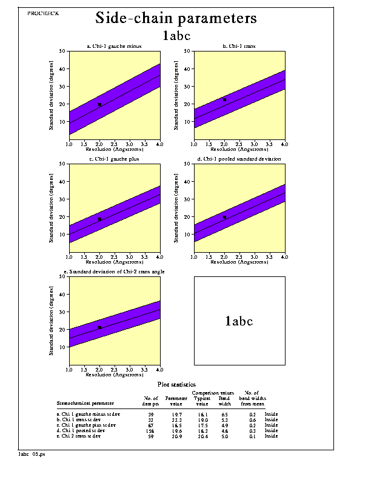

5. Side-chain parameters

Description
The five graphs on the side-chain parameters plot show how the structure
(represented by the solid square) compares with well-refined structures at
a similar resolution. The dark band in each graph represents the results
from the well-refined structures; the central line is a least-squares fit
to the mean trend as a function of resolution, while the width of the band
on either side of it corresponds to a variation of one standard deviation
about the mean. In all cases the trend is dependent on the resolution.
Note. This plot is intended as a rough guide only and too much
reliance should not be placed on results being "better than
structures at the same resolution".
The 5 properties plotted are:
- a. Standard deviation of the chi-1 gauche minus torsion angles.
- b. Standard deviation of the chi-1 trans torsion angles.
- c. Standard deviation of the chi-1 gauche plus torsion angles.
- d. Pooled standard deviation of all chi-1 torsion angles.
- e. Standard deviation of the chi-2 trans torsion angles.